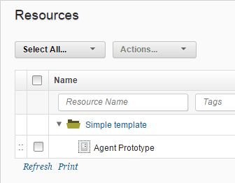

Creating resource templates
To create a resource template, specify the contents and organization of the template, including resources, groups, and agent prototypes.
- Click Resources > Resource Templates and then click Create Resource Template.
-
Specify a name for the template.
Restriction: If you use this resource template with a blueprint that you provision to a cloud that uses virtual system patterns, the name cannot contain asterisk (*), backslash (\), or forward slash (/) characters. See Modeling environments for clouds that use virtual system patterns.
-
In the Teams fields, specify the access information for the new resource template.
- Click Save. The resource hierarchy for the new template opens in the editor. The hierarchy contains a top-level group.
- Add resources to the template hierarchy by selecting the top-level group or another resource or group in the template, clicking Actions, and clicking a task, such as Add Group. The template can contain any number of resources.
-
Add agent prototypes to the resource template. An agent prototype is a resource that represents one or more agents that are not yet installed or connected to an environment.
- Next to a folder in the resource template, click Actions > Add Agent Prototype. You can add only one agent prototype to each folder.
- In the Create Resource window, specify a description for the agent prototype.
-
Specify a name pattern for the agents that the agent prototype represents. You might use an agent name pattern if you have a system for provisioning agents that is not cloud-based. When you create an environment from an application blueprint that is based on this resource template, you map agents that match the name pattern to the corresponding agent prototypes in the blueprint. For any agent prototypes that do not match existing agents, an entry is created in the environment for an agent with the expected name.
Note: When you specify an agent name pattern, you can not use wildcards or regular expressions. You can use the following special properties as variables that represent the application name and the environment name:
$\{p:application.name\}and$\{p:environment.name\}. -
Click Save.
-
Add components to the agent prototypes.
-
Next to an agent prototype in the resource template, click Actions > Add Component.
- From the Component list, select a component that runs on the agent prototype.
- Enter a description.
- Define default user impersonation credentials. For information about setting impersonation credentials, see Defining default user impersonation credentials.
- Click Save. Note: If you create an environment with an environment template and then add component mappings to the resource template used by the template, the new component mappings are added to the environment. However, if you remove component mappings from the resource template, the component mappings are not removed from the environment.
-
Add component tags to the agent prototypes.
Note: If you use this resource template in an application template and assign component tags to the application template, add those component tags to agent prototypes.
- Next to an agent prototype in the resource template, click Actions > Add Component Tag.
- From the Component Tag list, select a tag for the component that runs on the agent prototype.
- Enter a description.
- Define default user impersonation credentials. For information about setting impersonation credentials, see Defining default user impersonation credentials.
- Click Save.
For example, the following resource template contains a single agent prototype.

Parent topic: Resource templates